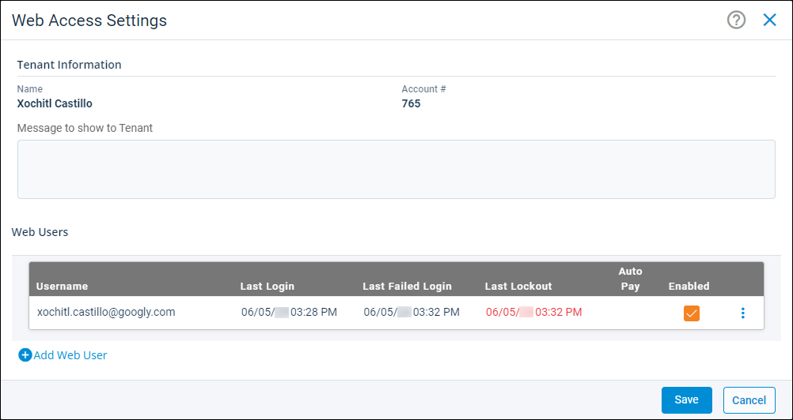

Source: https://rmxhelp.rentmanager.com/Topics/Express/Action/Tenant-TWA-Account-Unlock.htm
Unlock a Tenant Web Access (TWA) User Account
If a tenant has made too many unsuccessful attempts to log into Tenant Web Access (TWA), their account is locked for security purposes. You can unlock their account from the Web Access Settings pop-up, allowing them to try logging in again or to reset their password.
Related Preferences
The number of failed login attempts before a user is locked out is established in system web preferences. For more information, refer to Tenant Web Access General (System Web Preferences).
To unlock a user's TWA account, do the following:
-
Go to
 arrow_forward Rental Info arrow_forward General arrow_forward Tenants and select the tenant who is locked out.
arrow_forward Rental Info arrow_forward General arrow_forward Tenants and select the tenant who is locked out.
The Tenant details page displays. -
On the action bar to the right, select
 arrow_forward TWA Settings.
arrow_forward TWA Settings.
-
Select
 arrow_forward Remove User Lockout.
arrow_forward Remove User Lockout.
The TWA account is unlocked and the user can attempt to login again.